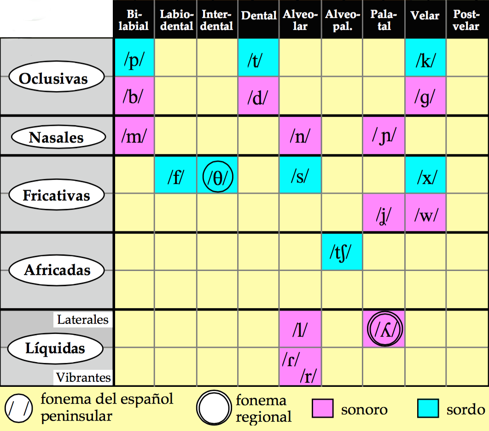

Fonética y español oral
Las sílabas, las vocales y el ritmo
Joseph V. Casillas
Instituto Franklin: otoño 2015
Precalentamiento
En grupos de tres discutid las siguientes preguntas
- ¿Qué lenguas hablas?
- ¿Cómo y dónde has aprendido a hablar el español?
- ¿Qué significa ser bilingüe?
- ¿Cuál es la relación que tienes con los dos idiomas? ¿Eres bilingüe? ¿Cómo caracterizarías tu bilingüismo?
- ¿Cuál es tu actitud y/o sentimientos hacia el español?
- ¿Qué es lo que más te gusta del idioma español?
- Si pudieras cambiar algo sobre la lengua, ¿que sería?
- ¿Qué planes tienes para tu futuro con las lenguas que hablas o la lingüística?
Sílabas, vocales y ritmo
El encadenamiento
- Tenemos una estructura sílabica preferida (CV.CV)
- Se mantiene tanto en el interior de la palabra como entre palabras
- amigo
- coche
- el otro
- en el coche
- al amigo
- buen año
- a.mi.go
- co.che
- e.lo.tro
- e.nel.co.che
- a.la.mi.go
- bue.na.ño
El encadenamiento
- Un fenómento característico del inglés es el golpe de glotis como
sonido consonántico (/ʔ/) katy perry
- Este sonido no existe en español
- Debéis evitarlo para mejorar la pronunciación
- Escencialmente lo que hay que hacer es pronunciar cada enunciado como si fuese una palabra
¿Cómo se hace?
- maximizando el arranque
- manteniendo la estructura silábica preferida entre palabras
Ejemplos
- un amigo
- el amigo
- tus amigos
- sus amigos
- los amigos
- dos hermanos
- los ángeles
- en este
- u.na.mi.go
- e.la.mi.go
- tu.sa.mi.gos
- su.sa.mi.gos
- lo.sa.mi.gos
- do.ser.ma.nos
- lo.sán.ge.les
- e.nes.te
Más ejemplos
- Es una lástima
- ¿Piensas así?
- ¡Ven y báñate!
- Las instrucciones están aquí.
- Los amigos están en Oslo.
- Los abuelos viven ahí.
- En estos años es algo difícil ir.
- e.su.na.lás.ti.ma
- ¿pien.sa.sa.sí?
- ¡ve.ny.bá.ña.te!
- la.sins.truc.cio.ne.ses.tá.na.quí
- lo.sa.mi.go.ses.tá.ne.nos.lo
- lo.sa.bue.los.vi.ve.na.í.
- e.nes.to.sa.ño.se.sal.go.di.fí.ci.lir
El encadenamiento
Secuencias de vocales entre palabras
- Una secuencia de 'u, i' y otra vocal (el orden no importa) se convierte en un diptongo en el habla rápida
| Habla lenta | Habla rápida | Transcripción |
|---|---|---|
| su. amigo | sua.mi.go | [su̯a].mi.go |
| mi. amigo | mia.mi.go | [mi̯a].mi.go |
| su. enemigo | su enemigo | [su̯e].ne.mi.go |
| mi. enemigo | mi enemigo | [mi̯e].ne.mi.go |
| su. oso | suo.so | [su̯o].so |
| mi. oso | mio.so | [mi̯o].so |
El encadenamiento
Mi amigo y yo fuimos a ver a un amigo
- Habla lenta y cuidada:
mi.a.mi.go.y.yo.fui.mos.a.ver.a.un.a.mi.go - Habla rápida:
mia.mi.goy.yo. fui.mo.sa.ve.rau.na.mi.go
[mi̯a].mi.[goi̯].yo.fui.mo.sa.ve.[rau̯].na.mi.go
El acento
El acento prosódico
- ¿Qué es una sílaba tónica?
- ¿Qué es una sílaba átona?
- ¿Cómo se identifica la sílaba tónica?
- ¿Cómo marcamos la sílaba tónica en una trascripción?
La duración
En español...
- las sílabas átonas y tónicas tienen la misma duración.
- Con.si.de.ra.ción
- Ca.sa
En inglés...
- las sílabas tónicas son más largas
- las átonas se reducen en duración y calidad
- Target (rojo = sílaba tónica)
- another (negro = schwas)
Para mejorar la pronunciación:
- no reducir vocales en español, mantener la calidad de las vocales átonas.
- Es decir, ¡evitar la scwha!
Más sobre la schwa
¿Qué es una scwha?
- Es una vocal (/ə/) típica del inglés
- Representa un sonido inacentuado (aparece en sílabas átonas)
- Es el sonido más común del inglés americano
- Existe en la gran mayoría de las palabras
- Es vuestro
ENEMIGO
¿Cómo de común? Identificad la schwa...

- animal, family
- the
- open
- travel
- item
- banana
- about
- was
- above
- gallon
- dinosaur
- particular
¿Cómo de común? Identificad la schwa...

- animal, family
- the
- open
- travel
- item
- banana
- about
- was
- above
- gallon
- dinosaur
- particular
Práctica

Español
ANITA
Inglés
- Recordad: Queremos vocales cortas y tensas
Práctica

Práctica
- fama
- musa
- tina
- mira
- chupa
- Mayra
- misa
- besa
- diga
- tuya
- habla
Práctica

- sílaba
- público
- termina
- suplico
- tercera
- directo
- comida
- catorce
- describa
- médico
- camina
- lágrima
Precalentamiento
A pensar
Reflexionad sobre los siguientes aspectos y proporcionad ejemplos de:
- Un sonido que se represente con diferentes letras
- Letras que se pronuncien de diferentes maneras
- Letras que no se pronuncien
- Una letra que se pronuncie con dos sonidos juntos
- Un sonido que se represente con dos letras juntas
Mini repaso


Jodee Berry of Panama City, Fla., sits with her toy Yoda at her lawyer's office Wednesday. Berry, a former Hooters waitress, has sued the restaurant where she worked saying she was promised a new Toyota for winning a beer sales contest in April. Berry, 26, believed that she had one a new car, but she was blindfolded, led to the parking lot and presented a toy Yoda, the little green guy from Star Wars.
Mini repaso
- El encadenamiento
- El acento
- La duración
El ritmo
- Español: Ritmo silábico
- depende del número de sílabas, tienen la misma duración
- Inglés: Ritmo acentual
- depende del número de sílabas tónicas
La transcripción
La transcripción
- Transcribir es representar mediante signos alfabéticos (los fonemas) la cadena hablada.
- En nuestro ámbito de estudio, la transcripción puede ser fonológica o fonética.
La transcripción: fonológica vs. fonética
- La transcripción fonológica: refleja la expresión en el plano de la lengua, es decir, la constitución fonológica de la emisión lingüística. Se ocupa, por tanto, sólo de lo distintivo.
- Ej. “brevedad” = /bre.be.dád/
La transcripción: fonológica vs. fonética
- La transcripción fonética: refleja la expresión en el plano del habla, es decir, las variantes utilizadas por el hablante, independientemente de su valor distintivo.
- Dicho de otra manera, es una representación escrita de los sonidos que pronunciamos.
- Ej. “brevedad” = [bre.βe.ˈðað]
- Ej. “brevedad” = [bre.βe.ˈðaθ]
- Ej. “brevedad” = [bre.βe.ˈða]
- Dicho de otra manera, es una representación escrita de los sonidos que pronunciamos.
La transcripción fonética
La transcripción fonética puede ser estrecha o ancha:
- transcripción estrecha: intenta recoger la mayor cantidad posible de información fonética.
- transcripción ancha: anota sólo los rasgos que contribuyen a la significación.
La transcripción ancha será suficiente para los propósitos de nuestra clase.
La transcripción
Recordad
- Separamos todas las sílabas
- Siempre marcamos el acento prosódico de cada palabra (aunque no lleve tilde normalmente)
- "casa" = /ˈka.sa/
/ɾ/ vs. /r/
Las vibrantes
En español tenemos dos tipos de vibrantes
- La vibrante simple: /ɾ/
- La vibrante
múltiple : /r/
/ɾ/ vs. /r/
- /ɾ/ ⟶ "r" (siempre)
- /r/ ⟶ "r" o "rr"
- ¿Cómo sabemos cuándo?
Las vibrantes
"r" = /r/ en los siguientes contextos...
- Al principio de palabra
- "rico": /ˈri.ko/
- "romántico": /ro.ˈman.ti.ko/
- Tras los grafemas "l", "n", "s"
- alrededor: /al.re.de.ˈdoɾ/
- Enrique: /en.ˈri.ke/
- Israel: /is.ra.ˈel/
En cualquier otro contexto, "r" es /ɾ/
Los fonemas
Fonemas consonánticos

A transcribir...
- Con un compañero, transcribe las siguientes palabras
- Usad vuestros apuntes para ayudaros
Repaso
Hasta ahora hemos visto...
- la lingüística y las distintas ramas
- grafema/dígrafo vs. fonema
- la sílaba
- composición (ataque, núcleo, coda)
- grupos consonánticos
- monoptongos
- diptongos (3 tipos)
- hiatos
- diferencias entre el inglés y el español (vocales)
- correspondencia absoluta/exclusiva
- semivocales/semiconsonantes
- el grafema "x"
- los fonemas [ʝ] y [w]
- el acento ortográfico
- el acento prosódico
Esta semana hemos visto...
La sílaba
- El encadenamiento
- consonantes
- vocales
- El acento
- prosódico
- ortográfico
- La duración
- español vs. inglés
- El ritmo
- español vs. inglés
- La schwa
- ¿qué es?
- ¿cómo se identifica?
- ¿cómo se evita?
- Cómo mejorar la pronunciación
- La transcripción
- fonológica vs. fonética
- estrecha vs. ancha
- Los fonemas del español
- /ɾ/ vs. /r/
Prueba el martes
- Repasad las presentaciones
- Estudiad los resúmenes
- ¡Haced preguntas!
Más sobre la estructura silábica
La estructura silábica preferida
- En español la estructura silábica preferida es CV.CV
- Se prefieren las silábas abiertas
- Se prefieren los ataques antes que las codas
El encadenamiento
- Es un actor muy bueno.
- Esunactormuybueno.
- E.su.nac.tor.muy.bue.no
- /e.su.nak.ˈtoɾ.mu̯i.ˈbu̯e.no/
Vale, pero...
- ¿Qué evidencia tenemos de que se prefieren los ataques?
- Un actor → /u.nak.ˈtoɾ/
- Un actor → /un.ak.ˈtoɾ/
- ¿Lo podemos demostrar acústica, física o psicológicamente?
Un pequeño experimento de percepción
- Escuchad el siguiente fragmento de una oración.
- En un papel escribid lo que habéis escuchado y la traducción correspondiente en inglés
- Después, en español, agregad unas palabras más a lo que hayáis escrito para hacer una oración completa.
¿Qué habéis escuchado?
- ¿Habéis escuchado "los ecos"?
- ¿Cómo habéis terminado la frase?
- ¿Podría haber sido otra cosa?
Frase 1

Frase 2

¿Cómo?
- ¿Por qué habéis interpretado algo distinto?
- ¿Cómo lo transcribiríais?
- Sería posible vuestra interpretación si la estructura silábica no fuese CV.CV?
Comparad...
Lo secos
[lo.ˈse.kos]
[lo.ˈse.kos]
Los ecos
[lo.ˈse.kos]
[lo.ˈse.kos]
¿y qué?
- Si no hubiese una estrucura silábica preferida, lo más lógico sería que pronunciásemos los dos enunciados de distintas maneras y que los percibiésemos como estructuras diferentes.
- Como éste no parece ser el caso, suponemos que hay una estructura silábica preferida que fuerza la resilabificación entre palabras (el encadenamiento) y por tanto no percibimos una diferencia entre 'lo secos' y 'los ecos'.